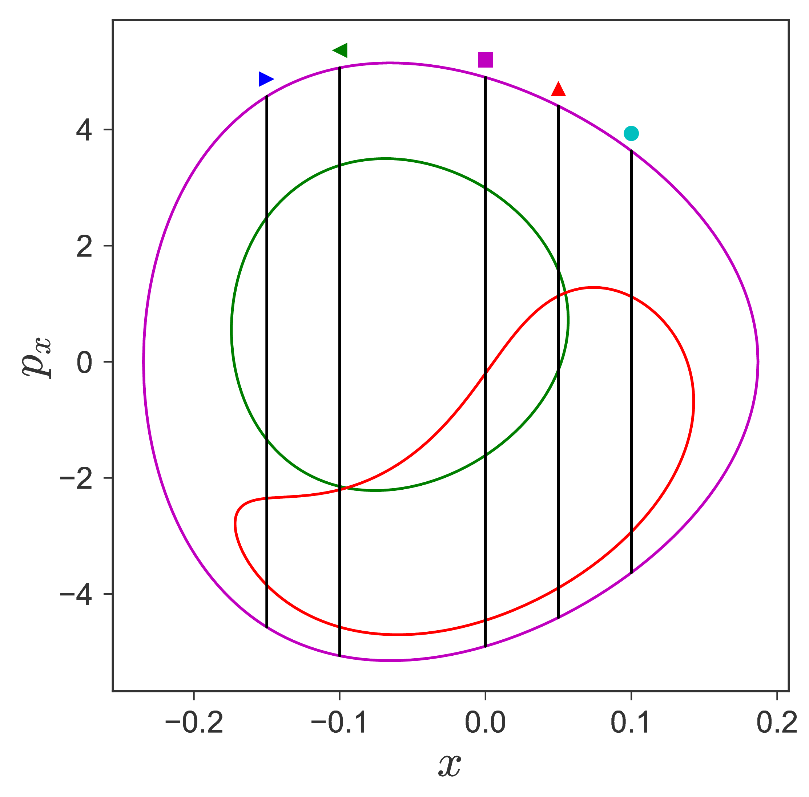
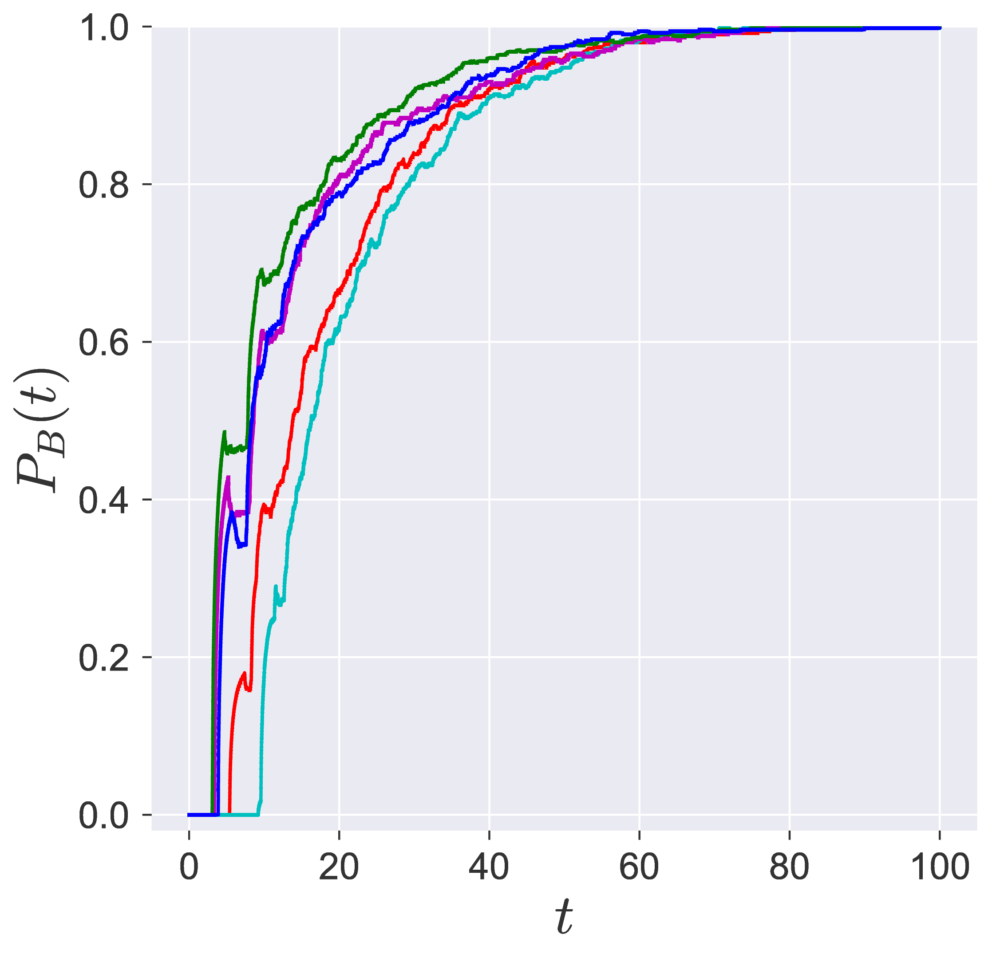
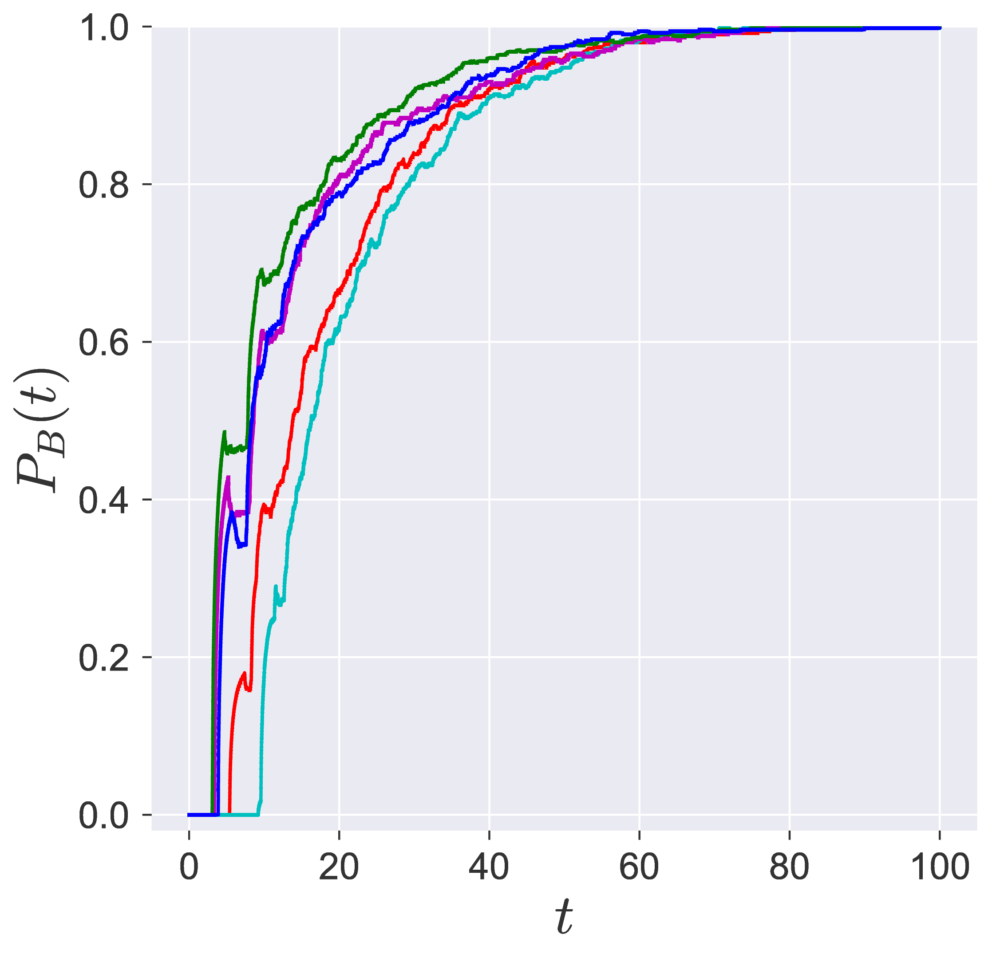

Abstract
Reactive islands in phase space of isomerization have been useful for computing reaction rates since the work of De Leon, Marston, Davis (Davis 1985, 1987; Marston and De Leon 1989; De Leon and Marston 1989). We present an computational approach for obtaining the reactive islands based on computing the NHIM and its invariant manifolds. The results are presented in the context of isomerization reactions to show the direct connection between reactive islands as given by the invariant manifolds or detected using LD and sampling reactive trajectories and committor probabilities.
Isomerization is one of the most prevalent reaction when studying atmospheric, medical, and industrial chemistry 1, and thus have garnered interest from both theoretical and applied chemistry (Wieder and Marcus 1962; McIver and Komornicki 1972; Dugave and Demange 2003; Donohoe, O’Riordan, and Rosa 2009). From an applied perspective, the influence of various solvents on the rate constant of conformational isomerization has been pursued for specific molecules (Price and Snyder 1961; Halicioǧlu and Sinanoǧlu 1969; Flom, Nagarajan, and Barbara 1986; Eberhardt et al. 1992; Duffy, Severance, and Jorgensen 1992). From a theoretical perspective, as is adopted in this article, it is instructive to formulate a systematic approach for identifying reactive trajectories in the spirit of transition path sampling (Bolhuis et al. 2002) and reactive islands (Davis 1985, 1987; Marston and De Leon 1989; De Leon and Marston 1989).
Following the derivation of the Langevin equations (Kramers 1940) and its generalized system dynamics in a heat bath (Zwanzig 1973), the Kramers turnover of reaction rates (escape rates from a potential well) with increasing viscosity of the solvent (intensity of noise) has been used to obtain reaction rate expressions in gas and condensed phase reactions by Grote, Hynes, Pollak, Grabert, Hänggi (Pollak, Grabert, and Hänggi 1989; Pollak and Talkner 1995). The generalized Langevin equation of motion for a particle trapped in a one-dimensional well with a barrier height \(\mathcal{V}^{\ddagger}\) and coupled to a medium such as gas or liquid is modeled by a bath with a viscosity parameter. This framework has received much attention in the literature where the system dynamics can be obtained explicitly. The Langevin dynamics represents the motion of the particle in a bath which is modeled using a large number of harmonic oscillators. In this set-up, the bath coordinates are coupled with the system coordinates, and the Hamiltonian is simply a sum of system and bath components. However, the system dynamics of a two or more degrees of freedom coupled with bath modes has not received a global analysis from a dynamical systems perspective of reactions. In this direction, the first step would be to consider a two degrees of freedom reaction with well-understood chemical observables such as reaction coordinate, and where the harmonic bath modes can be coupled to represent the reaction in a condensed phase. In this work, we will adopt the two degrees of freedom isomerization model of De Leon and Berne who have studied the chemical reaction dynamics extensively using a dynamical systems perspective (De Leon and Berne 1981; De Leon and Marston 1989; De Leon, Mehta, and Topper 1991b, 1991a; De Leon 1992). This model of isomerization describes the conformational change by the motion of an internal angle where the isomers are represented by the well in a double potential well separated by a barrier. The two degrees of freedom in the model correspond to the bond that undergoes structural change and to the bond that breaks above dissociation energy. Typically, this isomerization barrier height is lower than the dissociation energy of the molecule, and the activation energy for the isomerization is imparted by molecular collisions or photoexcitation.
Traditionally, the construction of a dividing surface (DS) was focused on critical points of the potential energy surface (PES), that is, in the configuration space describing the molecular system (Komatsuzaki and Nagoaka 1997; Komatsuzaki and Berry 2000). Critical points on the PES do have significance in phase space; they are the equilibrium points for zero momentum. But they continue to have influence for nonzero momentum for a range of energies above the energy of the equilibrium point. The construction of a DS separating the phase space into two parts, reactants and products, has been a focus from the dynamical systems point of view in recent years (Wiggins et al. 2001; Uzer et al. 2002; Waalkens and Wiggins 2004). In phase space, that is for nonzero momentum, the role of the saddle point is played by an invariant manifold of saddle stability type, the normally hyperbolic invariant manifold (NHIM) (Wiggins 1990, 2013). In order to fully appreciate the NHIM and its role in reaction rate theory, it is useful to begin with a precursor concept the periodic orbit dividing surface or PODS. For systems with two DoF described by a natural Hamiltonian, kinetic plus potential energy, the problem of constructing the DS in phase space was solved during the 1970s by McLafferty, Pechukas and Pollak (Pechukas and McLafferty 1973; Pechukas and Pollak 1977, 1979; Pollak and Pechukas 1978). They demonstrated that the DS at a specific energy is related to an invariant phase space structure, an unstable periodic orbit (UPO) which defines (it is the boundary of) the bottleneck in phase space through which the reaction occurs. The DS which intersects trajectories evolving from reactants to products can then be shown to have the geometry of a hemisphere in phase space whose boundary is the UPO. The same construction can be carried out for a DS intersecting trajectories crossing from products to reactants and these two hemispheres form a sphere for which the UPO is the equator. Generalisation of this construction of DS to high dimensional systems has been a central question in reaction dynamics and has only received a satisfactory answer in recent years (Wiggins et al. 2001; Uzer et al. 2002; Waalkens and Wiggins 2004). The key difficulty being the high dimensional analogue of the UPO used in the two DoF system for the construction of the DS and which is resolved by considering the NHIM, which has the appropriate dimensionality for anchoring the dividing surface in high dimensional phase space (Wiggins 1990). Normal hyperbolicity of these invariant manifolds means that their stability, in a precise sense, is of saddle type in the transverse direction, which implies that they possess stable and unstable invariant manifolds that are impenetrable barriers and mediate reactive trajectories in phase space. These invariant manifolds of the NHIM are structurally stable, that is, stable under perturbation (Wiggins 2013). For two DoF systems, the NHIM is an unstable PO, and for an \(N > 2\) DoF system at a fixed energy, the NHIM has the topology of a \((2N-3)\)-dimensional sphere and is the equator of a \((2N-2)\)-dimensional sphere which is the DS. This DS can then be used to divide the \((2N-1)\)-dimensional energy surface into two parts, reactants and products (Gillilan and Ezra 1991; Komatsuzaki and Nagaoka 1996; Komatsuzaki and Nagoaka 1997; Komatsuzaki and Berry 2000, 2002). An elementary description of the role of the NHIM in reaction dynamics is given in (Wiggins 2016) along with description of their geometry using quadratic normal form Hamiltonians. Fundamental theorems assure the existence of the phase space structures NHIM and its invariant manifolds for a range of energies above that of the saddle (Wiggins 2013). However, the precise extent of this range, as well as the nature and consequences of any bifurcations of the phase space structures that might occur as energy is increased, is not known and is a topic of continuing research(Li, Toda, and Komatsuzaki 2009; Inarrea et al. 2011; Allahem and Bartsch 2012; Mauguière et al. 2013; MacKay and Strub 2014; MacKay and Strub 2015).
Thus, calculation of reaction rate (or flux) based on the geometry of phase space structures requires identifying trajectories that start in the reactant well, cross the dividing surface constructed from the NHIM, and reach the product well. This dividing surface has been shown to be the appropriate (locally no-recrossing) surface that reactive trajectories must cross since the calculated reaction rates do not need correction due to recrossings (Waalkens and Wiggins 2004). This construction is in contrast to the “standard” transition-state-theory (TST) for constructing the dividing surface which is only exact in gas phase unimolecular reactions and when ergodicity of trajectories in the phase space holds (Pollak and Talkner 1995). As is now established, the no recrossing (locally) property of a dividing surface is a contribution of the phase space perspective of chemical reactions (Uzer et al. 2002). While the standard TST relies on recrossing free surface for calculating reaction flux, a dividing surface constructed in the configuration space violates this condition in the case of solvent, and the TST based reaction rate is not exact. This violation of the recrossing property when DS is constructed in the configuration space of a reaction in a high viscosity solvent also follows from the Kramers’ diffusion model, Langevin equation, of chemical reactions (Pollak and Talkner 1995). Thus, finding the reactive trajectories, and the changes in the DS and NHIM due to a solvent presents a worthwhile step towards development of the role of phase space structures in reaction dynamics.
The geometry of unimolecular reactions dynamics has been developed using a \(N\) degrees of freedom Hamiltonian where the coordinates represent intermolecular bonds. As a natural step in studying unimolecular reaction dynamics in solvents, we adopt a model where the reaction coordinates (modeled as a system Hamiltonian) are coupled with a set of harmonic bath modes (modeled as a bath Hamiltonian) (Berezhkovskii, Pollak, and Zitserman 1992; Hershkovitz and Pollak 1997; Reese and Tucker 1998; Craig and Manolopoulos 2005). This is with the intention of parametrizing the effects of a bath (or solvent) on the system dynamics. This formulation of coupling harmonic bath modes with system dynamics also serves as a preliminary step in assessing the capabilities of a trajectory diagnostic called Lagrangian descriptors (LDs) (Mancho et al. 2013) in realistic (high dimensional) chemical systems. This system-bath model will also serve as a test bed for illustrating the use of LDs in directly computing the chemical observables. But before doing that, we would like to identify the reactive trajectories and develop a systematic approach for transition path sampling (in the sense of rare event sampling) for reactions in solvent. Thus, can we identify the qualitative changes in the isomerization of a molecule in the presence of a solvent? In particular, we would like to understand the influence of the coupling strength, the solvent’s viscosity, and the number of bath modes on the reactive trajectories. We will answer this using LDs which have been shown recently to be of use in detecting phase space structures that mediate reactive trajectories in dissipative, time-dependent models of chemical reactions (Junginger and Hernandez 2016b; Junginger, Craven, et al. 2016a), and for transition path sampling in two degrees of freedom models of chemical reactions (Patra and Keshavamurthy 2018). In this article, we will present an approach for sampling reactive trajectories and identifying reactive islands in high dimensional phase space of an isomerization reaction (system) in a solvent (bath coupled to each of the system configuration coordinates) which is following our work on quadratic normal form Hamiltonian systems (Naik, García-Garrido, and Wiggins 2019).
This article is outlined as follows.
We will consider the two degrees-of-freedom Hamiltonian for a unimolecular conformational isomerization introduced and studied extensively by De Leon and co-authors (De Leon and Berne 1981; De Leon and Marston 1989; Ozorio de Almeida et al. 1990; De Leon, Mehta, and Topper 1991b; De Leon 1992). This 2 degrees-of-freedom Hamiltonian is given by \[\begin{aligned} \mathcal{H}(x,y,p_x,p_y) =& T(p_x, p_y) + V_{\rm DB}(x,y) \\ =& \frac{p_x^2}{2m_s} + \frac{p_y^2}{2m_s} + V_{\rm DB}(x,y) \end{aligned} \label{eqn:ham_db}\] where the potential energy function \(V_{\rm DB}(x,y)\) is (a detailed description is in the Appendix: [appsect:dbpot]) \[V_{\rm DB}(x,y) = D_x\left[ 1 - \exp(-\lambda x) \right]^2 + \dfrac{\mathcal{V}^{\ddagger}}{y_w^4}y^2(y^2 - 2y_w^2)\exp(-\zeta \lambda x) + \epsilon_s \label{eqn:sys_pot}\]
and we will focus on varying \(\lambda\) and \(\zeta\).
The underlying Hamiltonian vector field is given by \[\begin{aligned} \dot{x} = \frac{\partial \mathcal{H}}{\partial p_x} &= \frac{p_x}{m_s} \\ \dot{y} = \frac{\partial \mathcal{H}}{\partial p_y} &= \frac{p_y}{m_s} \\ \dot{p_x} = - \frac{\partial \mathcal{H}}{\partial x} &= 2 D_x \lambda \exp(-\lambda x) (\exp(-\lambda x) - 1) + \\ & \qquad \dfrac{\mathcal{V}^{\ddagger}}{y_w^4}\zeta \lambda y^2(y^2 - 2y_w^2)\exp(-\zeta \lambda x)\\ \dot{p_y} = -\frac{\partial \mathcal{H}}{\partial y} &= -4 \dfrac{\mathcal{V}^{\ddagger}}{y_w^4}y(y^2 - y_w^2)\exp(- \zeta \lambda x) \end{aligned} \label{eqn:vec_field_db}\]
The total energy will be denoted by \(\mathcal{H}(x,y,p_x,p_y) = E = E_{\rm saddle} + \Delta E\) where \(\Delta E\) is the excess energy above the isomerization barrier energy.
The equilibrium points are located at \(\overline{q}_s = (0,0,0,0)\) and at \(\overline{q}_c =(x_{eq},\pm y_w,0,0)\) where the \(x\)-coordinate, \(x_{eq}\), needs to be obtained using numerical root solver.
The total energy of the equilibrium point \(\overline{q}_s\) is \(\mathcal{H}(\overline{q}_s) = \epsilon_s\) for all parameter values, and will be referred to as the critical energy. The total energy of the equilibrium point \(\overline{q}_c\) is given by
\[\mathcal{H}(\overline{q}_c) = D_x(1 - \exp(-\lambda x_{eq}))^2 - \mathcal{V}^{\ddagger} \exp(-\zeta \lambda x_{eq}) + \epsilon_s\]
When \(\zeta = 0\), the equilibrium point \(\overline{q}_c\) is at \((0,\pm y_w,0,0)\), and has total energy \(\epsilon_s - \mathcal{V}^{\ddagger}\) (see Supplemental material for details).
[fig:pecontours_db]
Fig. 1. Potential energy function for the De Leon-Berne model of unimolecular isomerization for 3 different sets of coupling and range parameters used in. It is to be noted that the potential energy surface is ``mostly’’ flat and then becomes steep for large \(x < 0\). The coordinates of the saddle equilibrium point are also independent of the parameters and located at the origin.
In this section we describe the system-bath model for a system with two degrees-of-freedom (DoF). While system-bath models have received a great deal of attention in the chemistry and physics community, models with systems having more than 1 DoF have received much less attention.
We will consider the 2 degree-of-freedom Hamiltonian [eqn:ham_db] coupled with harmonic oscillators for a system-bath model of the form (Berezhkovskii, Pollak, and Zitserman 1992; Hershkovitz and Pollak 1997; Reese and Tucker 1998):
\[\begin{aligned} \mathcal{H}(x,y,x_j,y_j,p_x,p_y,p_{x_j},p_{y_j}) = \underbrace{\frac{p_x^2}{2 m_s} + \frac{p_y^2}{2 m_s} + V_{DB}(x,y)}_{\mbox{System Hamiltonian}} + & \underbrace{\sum_{j=1}^{N_B} \frac{1}{2} \left[ \frac{p_{x_j}^2}{m_j} + \left(\omega_j x_j -\frac{c_{x,j} x}{\omega_j} \right)^2 \right]}_{\mbox{Coupling of the bath to $x$}} \\ & + \underbrace{\sum_{j=1}^{N_B} \frac{1}{2} \left[ \frac{p_{y_j}^2}{m_j} + \left(\omega_j y_j - \frac{c_{y,j} y}{\omega_j} \right)^2 \right]}_{\mbox{Coupling of the bath to $y$}} \\ %& = \mathcal{H}_{\mbox{system}} + \mathcal{H}_{\mbox{bath coupled to $x$}} + \mathcal{H}_{\mbox{bath coupled to $y$}} \end{aligned} \label{eqn:sb_ham}\]
where \(x\) and \(y\) denote the configuration space coordinates of the system, \(p_x\) and \(p_y\) are the associated conjugate momenta, \(p_{x_j}\), \(x_j\) denote the \(j^{\rm th}\) bath phase space coordinates associated with the system configuration space variable \(x\), and \(p_{y_j}\), \(y_j\) denote the \(j^{\rm th}\) bath phase space coordinates associated with the system configuration space variable \(y\). We assume that the frequencies, \(\omega_j\), are the same for each bath, and the coupling constants for each configuration space variable to the bath are given by \(c_{x,j}\) and \(c_{y,j}\). In the supplemental material, we explicitly carry out the discretization that gives us the coupling constants \(c_{x,j}\) and \(c_{y,j}\) and the frequencies \(\omega_j\). These quantities are given by \[\omega_j = -\omega_c \log \left(\frac{j-\frac{1}{2}}{N_B} \right), \quad j=1, \ldots, N_B \label{eqn:disc_freq_1}\] and \[\left.\begin{aligned} c_{x,j} = \sqrt{\frac{2 \eta_{x} \omega_{c}}{\pi N_B}} \, \omega_j, \; c_{y,j} = \sqrt{\frac{2 \eta_{y} \omega_{c}}{\pi N_B}} \,\omega_j, \end{aligned}\right. \quad j=1, \ldots, N_B. \label{eqn:coupling_coeff}\] We note here that the baths are coupled to each other through the system dynamics. Hamilton’s equations for the system-bath dynamics, using Eqn. [eqn:sys_pot] and Eqn. [eqn:sb_ham], are given by \[\begin{aligned} \dot{x} = & \frac{\partial H}{\partial p_x} = \frac{p_x}{m_s}, \\ \dot{y} = & \frac{\partial H}{\partial p_y} = \frac{p_y}{m_s}, \\ \dot{x}_j = & \frac{\partial H}{\partial p_{x_j}} = \frac{p_{x_j}}{m_j}, \qquad j=1, \ldots, N_B \\ \dot{y}_j = & \frac{\partial H}{\partial p_{y_j}} = \frac{p_{y_j}}{m_j}, \qquad j=1, \ldots, N_B, \\ \dot{p}_x = &-\frac{\partial H}{\partial x} = 2 D_x \lambda \exp(-\lambda x) (\exp(-\lambda x) - 1) + \\ & \qquad \qquad \dfrac{\mathcal{V}^{\ddagger}}{y_w^4}\zeta \lambda y^2(y^2 - 2y_w^2)\exp(-\zeta \lambda x) + \sum_{j=1}^{N_B} \frac{c_{x,j}}{\omega_j} \left(\omega_j x_j - \frac{c_{x,j} x}{\omega_j} \right), \\ \dot{p}_y = &- \frac{\partial H}{\partial y} = -4 \dfrac{\mathcal{V}^{\ddagger}}{y_w^4}y(y^2 - y_w^2)\exp(- \zeta \lambda x) + \sum_{j=1}^{N_B} \frac{c_{y,j}}{\omega_j} \left(\omega_j y_j - \frac{c_{y,j} y}{\omega_j} \right), \\ \dot{p}_{x_j} = &- \frac{\partial H}{\partial {x_j}} = - \omega_j \left(\omega_j x_j - \frac{c_{x, j} x}{\omega_j} \right) , \qquad j=1, \ldots, N_B \\ \dot{p}_{y_j} = & -\frac{\partial H}{\partial {y_j}} = - \omega_j \left(\omega_j y_j - \frac{c_{y, j} y}{\omega_j} \right) , \qquad j=1, \ldots, N_B, \\ \end{aligned} \label{eqn:Hameq_sys_bath}\] where the bath frequencies \(\omega_j\) and coupling coefficients \(c_{x,j},c_{y,j}\) are given by Eqn. [eqn:disc_freq_1] and Eqn. [eqn:coupling_coeff], respectively. The total energy will be denoted by \(\mathcal{H}(x,y,x_j,y_j,p_x,p_y,p_{x_j},p_{y_j}) = E = E_{\rm saddle} + \Delta E\) where \(j=1, 2, \ldots, N_B\) and \(\Delta E\) is the excess energy with respect to the isomerization barrier energy. In this article, we are adopting the contraction \(x_j\) to denote \(x_1, x_2, \ldots, x_{N_B}\); \(p_{x_j}\) to denote \(p_{x_1}, p_{x_2}, \ldots, p_{x_{N_B}}\), and so forth.
In this form of coupling each bath mode is coupled with all the degrees of freedom of the system, the total number of degrees of freedom are \(N_S N_B + N_S\) and as a result the dimension of phase space is \(2N_S(N_B + 1)\). Thus, it gives rise to a high dimensional Hamiltonian model that allows us to incorporate a high number of degrees of freedom by increasing the number of bath modes. In this study, we will first focus on varying the number of bath modes, in particular when \(N_B = 1, 2, 4, 8, 16\) which corresponds to \(8, 12, 20, 36, 68\) dimensional phase space. Even though, the number of bath modes are not large enough to capture the effect of a solvent dynamics in the Langevin sense, but nonetheless this formulation can be extended as long as enough computational time is reserved to obtain trajectories and the associated diagnostic method. However, the high dimensionality of the system-bath model will be a setting to assess how the method of Lagrangian descriptors performs in more realistic chemical systems. This also gives a natural way to model the unimolecular conformational isomerization in a solvent and allows us to vary the friction of the environment from low-density gases to high-density liquids (Tucker 2000).
The equilibrium points of the system-bath model [eqn:Hameq_sys_bath] are located at \(\overline{q}_s = (0,0,0_j,0_j,0,0,0_j,0_j)\) and at \[\overline{q}_c = (x_{eq},\pm y_w,(c_{x,j}/\omega_j^2)x_{eq},(c_{y,j}/\omega_j^2)y_w,0,0,0_j,0_j)\] where \(x_{eq}\) is the \(x\)-coordinate of the equilibrium point in the system model and needs to be obtained using numerical nonlinear root solver. This shows the system coordinates \((x,y)\) of the equilibrium points do not depend on the bath parameters and thus the isomer wells are still at the same location. This lets us use the same surface of section to compute Lagrangian descriptor even when increasing the bath modes.
The linear stability analysis (shown in the appendix) of these equilibrium points gives their stability does not change from the system model by adding the bath modes in the form of Eqn. [eqn:sb_ham]. Next, the total energy of the index-1 equilibrium point at \(\overline{q}_s\) is \(\mathcal{H}(0,0,0_j,0_j,0,0,0_j,0_j) = \epsilon_s\) which is the same as in the system Hamiltonian [eqn:ham_db].
The Lagrangian descriptor (LD) is the arc length of a trajectory with initial conditions \(\mathbf{x}_0\) at time \(t_0\) and integrated for a fixed time, \(\tau\), in forward or backward direction (Madrid and Mancho 2009). Recently, an alternate formulation has been developed (Lopesino et al. 2017) for continuous time dynamical systems to prove results on detecting invariant phase space structures using singular features in the LD contour map.
In the general setting of a non-autonomous vector field \[\frac{d\mathbf{x}}{dt} = \mathbf{v}(\mathbf{x},t), \quad \mathbf{x} \in \mathbb{R}^n \;,\; t \in \mathbb{R}\] where \(\mathbf{v}(\mathbf{x},t) \in C^r\) (\(r \geq 1\)) in \(\mathbf{x}\) and continuous in time. The definition of the LD depends on the initial condition \(\mathbf{x}_{0} = \mathbf{x}(t_0)\), on the initial time \(t_0\) (trivial for autonomous systems), the integration time \(\tau\), and the type of norm used in the form below:
\[M_p(\mathbf{x}_{0},t_0,\tau) = \displaystyle{\int^{t_0+\tau}_{t_0-\tau} \sum_{i=1}^{n} |\dot{x}_{i}(t;\mathbf{x}_{0})|^p \; dt} \label{eqn:M_function}\]
where \(p \in (0,1]\) and \(\tau \in \mathbb{R}^{+}\) are freely chosen parameters, and the overdot represents the derivative with respect to time. It is to be noted here that there are three formulations of the function \(M_p\) in the literature: the arc length of a trajectory in phase space (Madrid and Mancho 2009), the arc length of a trajectory projected on the configuration space (Junginger, Craven, et al. 2016b; Junginger and Hernandez 2016a; Junginger, Duvenbeck, et al. 2017; Junginger, Main, et al. 2017), and the sum of the \(p\)-norm of the vector field components (Lopesino et al. 2015, 2017). This latter formulation, indeed does not resemble the arc length of a trajectory, has been shown to identify the NHIM and its stable and unstable manifolds with the singular features and minima (or maxima) in the contour map for benchmark systems in recent work by the authors (Naik, García-Garrido, and Wiggins 2019; Naik and Wiggins 2019). Thus, it follows from the numerical verifications and theoretical proof that \[\begin{aligned} \mathcal{W}^s(\mathbf{x}_0, t_0) & = \text{\rm argext} \; \mathcal{L}^{(f)}(\mathbf{x}_0, t_0, \tau) \\ \mathcal{W}^u(\mathbf{x}_0, t_0) & = \text{\rm argext} \; \mathcal{L}^{(b)}(\mathbf{x}_0, t_0, \tau)\end{aligned}\] where the stable and unstable manifolds (\(\mathcal{W}^s(\mathbf{x}_0, t_0)\) and \(\mathcal{W}^u(\mathbf{x}_0, t_0)\)) denote the invariant manifolds at intial time \(t_0\) and \(\text{\rm argext} \; (\cdot)\) denotes the argument that minimizes (or maximizes) the function \(\mathcal{L}^{(\cdot)}(\mathbf{x}_0, t_0, \tau)\) in forward and backward time, respectively. In addition, the coordinates on the NHIM, \(\mathcal{M}(\mathbf{x}_0, t_0)\), at time \(t_0\) is given by the intersection \(\mathcal{W}^s(\mathbf{x}_0, t_0)\) and \(\mathcal{W}^u(\mathbf{x}_0, t_0)\) of the stable and unstable manifolds, and thus given by
\[\begin{aligned} \mathcal{M}(\mathbf{x}_0, t_0) & = \text{\rm argext} \; \left( \mathcal{L}^{(f)}(\mathbf{x}_0, t_0, \tau) + \mathcal{L}^{(b)}(\mathbf{x}_0, t_0, \tau) \right) \\ & = \text{\rm argext} \; \mathcal{L}(\mathbf{x}_0, t_0, \tau) \end{aligned}\]
In applying the LD method to nonlinear systems, one observes multiple singularities and extremal values that can lead to ambiguities with isolating the extremas corresponding to the NHIM and the ones due to the invariant manifolds (Junginger, Duvenbeck, et al. 2017; Naik and Wiggins 2019). This computational issue has been addressed (Craven, Junginger, and Hernandez 2017; Craven and Hernandez 2016, 2015) to locate transition state trajectory for driven two degrees of freedom and three degrees of freedom chemical reaction models. It has been observed in numerical experiments that computing fixed integration time Lagrangian descriptor (LD) as given by Eqn. [eqn:M_function] leads to two potential issues:
1. Bounded trajectories will show global recrossings of the barrier as predicted by Poincaré recurrrence theorem. The recrossings will show multiple minima and singularities in the LD contour map which obscures locating the actual NHIM (Junginger, Duvenbeck, et al. 2017; Naik and Wiggins 2019).
2. The trajectories that escape the open potential well will leave with ever increasing acceleration, if the potential energy surface opens out to infinity. These trajectories will have large LD values (compared to the bounded trajectories) and will render the contour map flat which again obscures locating the NHIM.
To circumvent these issues, a heuristic that has been adopted (Junginger, Duvenbeck, et al. 2017; Bardakcioglu et al. 2018; Feldmaier et al. 2019; Naik and Wiggins 2019) is to calculate LD values only until a trajectory remains inside the preselected barrier region. As a result, the initial conditions on an invariant manifold will show as singularities and maxima in the LD contour map because of being integrated for the full integration time interval, \(\tau\), which others which leave the region will have smaller LD values.
Thus, the formulation of Eqn. [eqn:M_function] can be modified as \[M_p(\mathbf{x}_{0},t_0,\tau^{\pm}) = \displaystyle{\int^{t_0+\tau^+}_{t_0-\tau^-} \sum_{i=1}^{n} |\dot{x}_{i}(t;\mathbf{x}_{0})|^p \; dt} \label{eqn:M_function_var}\] where the integration time interval, \(\tau\), depends on a trajectory and is given by
\[\tau^{\pm}(\mathbf{x}_0) = \min\left(\tau, t\vert_{|\mathbf{x}(t)| > q_s} \right) \label{eqn:var_time_qs}\]
where \(q_s\) defines the preselected barrier region in the configuration space around the saddle in the bottleneck. We note here that the only initial condition that gets integrated for the full time interval \(\tau\) units in forward and backward time is the one on the NHIM. In addition, the coordinates on the NHIM, \(\mathcal{M}(\mathbf{x}_0, t_0)\), at time \(t_0\) is given by \[\begin{aligned} \mathcal{M}(\mathbf{x}_0, t_0) & = \text{\rm argmax} \; \left( \mathcal{L}^{(f)}(\mathbf{x}_0, t_0, \tau) + \mathcal{L}^{(b)}(\mathbf{x}_0, t_0, \tau) \right) \\ & = \text{\rm argmax} \; \mathcal{L}(\mathbf{x}_0, t_0, \tau) \end{aligned}\] The variable integration time Lagrangian descriptor as given by Eqn. [eqn:M_function_var] to locate invariant manifolds is familiar to the dynamical systems community and is related to computing average exit times to locate invariant sets in the phase space of symplectic maps (Meiss 1997).
Fig. 2. Tube manifolds for the coupled system \(\zeta = 1.00\) and \(\lambda = 1.50\)
Finding reactive islands in 2 degrees-of-freedom molecular Hamiltonian has been shown using Lagrangian descriptors (Patra and Keshavamurthy 2018; Naik and Wiggins 2019).
First, we will use the following 2D isonergetic slice to compute Lagrangian descriptor contour map so that the reactive islands can be identified.
\[\begin{aligned} U_{xp_x}^- &= \left\{(x,y,p_x,p_y) \; | \; y = y_w, \; p_y(x,y,p_x;E) < 0 \right\} \label{eqn:sos_Uxpx_4d} \end{aligned}\]
for 4 cases of coupling and range parameters, \(\zeta\) and \(\lambda\). However, we will choose the system parameters: \(\zeta = 1.00, \, \lambda = 1.50\) and \(\zeta = 2.30, \, \lambda = 1.95\) as representative of regular and chaotic dynamics of the isomerization in the gas phase.
Fig. 3. Lagrangian descriptor and reactive islands for (a,d) \(\zeta = 1.00\) and \(\lambda = 1.00\), (b,e) \(\zeta = 1.00\) and \(\lambda = 1.50\), (c,f) \(\zeta = 2.30\) and \(\lambda = 1.95\). The top row shows the backward LD and the bottom row shows the forward LD. The blue and black curves denote the intersection of stable and unstable manifolds with the surface-of-section, respectively, and integration time \(\tau = 30\) and microcanonical ensemble of trajectories are initialized on the surface of section~.
In transition path sampling, the method to check the efficiency of the sampling procedure is done by computing the committor probability of starting in region A and ending up in region B (A and B are defined in the configuration space) for the configuration \(\mathbf{q}_j\) denoted by the \(P_B(\mathbf{q}_j, t_c)\) (Bolhuis et al. 2002; Patra and Keshavamurthy 2018). This is defined as the fraction of the trajectories that reach the specific product in region B at time \(t_c\) before reaching reactant in region A. For the unimolecular conformational isomerization, the region A and B are defined by the isomers A and B, respectively, while the specific reactant and product configuration is defined by the parameter \(y_w\).



 

Fig. 4. Committor probabilities and reactive islands for the 2 DoF isomerization. (a) Reactive islands obtained using direct computation of the cylindrical manifolds. (b-e) \(\tau = 30\): color maps denote variable integration time LDs and the line plots denote the committor probabilities. (f-i) \(\tau = 100\): color maps denote variable integration time LDs and the line plots denote the committor probabilities. Coupling strength, \(\zeta = 2.30\), and Morse range, \(\lambda = 1.95\).
It has been demonstrated that the reactive islands and their hierarchical structure can be used to search for new reactive trajectories using the so-called shooting method (Patra and Keshavamurthy 2018). In high dimensional molecular phase space, this can be a non-trivial task due to the available phase space volume and so has been phrased as “harvesting rare trajectories” and computed using transition path sampling methods (Patra and Keshavamurthy 2015). In this section, we would like to investigate if the LD contour maps can provide a systematic approach to finding reactive trajectories and hence building the high dimensional analogs of reactive islands in a system-bath model.
To sample the reactive trajectories, we introduce the following isoenergetic two-dimensional slice in the \(2N_S(N_B + 1)\)-dimensional phase space of Eqn. [eqn:Hameq_sys_bath]. \[\begin{aligned} U_{xp_x}^- &= \left\{(x,y,x_i,y_i,p_x,p_y,p_{x_i},p_{y_i}) \; | \; y = y_w, x_i = 0, y_i = 0, p_{x_i} = 0, p_{y_i} = 0, p_y(\cdot;E) < 0 \right\} \label{eqn:sos_Uxpx_systembath} \end{aligned}\]
Let us consider the bath parameters \(\eta_{x} = \eta_{y} = 0.01\) and \(\omega_{c} = 1.0\) and study the effect of increasing the number of bath modes on the reactive islands of the 2 DoF isomerization.
Changes in reactive islands with increasing number of bath modes for \(\tau = 100\) which we considered to be enough integration time for the isomerization given by the system [eqn:vec_field_db].
We acknowledge the support of EPSRC Grant No. EP/P021123/1 and Office of Naval Research (Grant No. N00014-01-1-0769).
Appendices
Thus the potential energy function for the system dynamics can be broken down into \[\begin{aligned} V_{\rm DB}(x,y) = & V_{DW}(x) + V_M(y) + V_{DWM}(x,y) \\ V_{DW}(y) = & \dfrac{\mathcal{V}^{\ddagger}}{y_w^4}y^2(y^2 - 2y_w^2) + \epsilon_s \\ V_M(x) = & D_x\left[ 1 - \exp(-\lambda x) \right]^2 \\ V_{DWM}(x,y) = & \dfrac{\mathcal{V}^{\ddagger}}{y_w^4}y^2(y^2 - 2y_w^2)\left[ \exp(-\zeta \lambda x) - 1 \right] \end{aligned} \label{eqn:pot_energy_db}\]
where the parameters are
\(m_s = 8.0:\) mass of the isomers.
\(\epsilon_s = 1.0:\) potential energy of the barrier.
\(D_x = 10.0:\) dissociation energy of the Morse potential.
\(y_w = \pm 1/\sqrt{2}:\) location of the isomerization wells (symmetric about the \(y = 0\) axis).
\(\zeta:\) coupling strength between the Morse potential and the double well potential.
\(\mathcal{V}^{\ddagger} = 1.0:\) potential energy difference between the isomerization barrier and the bottom of the well for \(\zeta = 0\).
\(\lambda:\) range of the Morse potential.
We note the symmetries in the system [eqn:vec_field_db], by substituting \((-y,-p_y)\) for \((y, p_y)\) which implies reflection about the \(x-\)axis (\(y = 0\) line) and expressed as \[s_y: (x,y,p_x,p_y,t) \rightarrow (x,-y,p_x,-p_y,t)\] Furthermore, the energy conservative Hamiltonian system [eqn:vec_field_db] has time-reversal symmetry given by \[s_t: (x,y,p_x,p_y,t) \rightarrow (x,y,-p_x,-p_y,-t)\] So, if \((x(t),y(t),p_x(t),p_y(t))\) is a solution to [eqn:vec_field_db], then combining the two symmetries \(s_y\) and \(s_t\), we can assert \((x(-t),y(-t),-p_x(-t),-p_y(-t))\) is another solution. These symmetries can be used to decrease the number of computations, and to find special solutions. For example, any solution of [eqn:vec_field_db] will evolve on the energy surface given by [eqn:ham_db]. For fixed energy, \(E(x,y,p_x,p_y) = e\), there will be zero velocity curves corresponding to \(V_B(x, y) = e\), the contours shown in Fig. [fig:pecontours_db]. Any trajectory which touches the zero velocity curve (boundary in phase space where kinetic energy is zero) at time \(t_0\) must retrace its path in configuration space (i.e. \(q = (x, y)\) space), \[q(-t + t_0) = q(t + t_0) \qquad \mathring{q}(-t + t_0) = -\mathring{q}(t + t_0)\] This fact is useful in finding the unstable periodic orbit located in the bottleneck of the Hamiltonian (De Leon and Berne 1981; De Leon and Marston 1989).
The area enclosed by the stable or unstable manifolds of the unstable periodic orbit associated with the index-1 saddle is used to calculate the reacting population of trajectories at a constant total energy \(E\). This population will be referred to as the microcanonical reaction probability.
For a systematic detection of the trajectories that lead to reaction by crossing the unstable periodic orbit in the bottleneck, we enforce the sign of momentum of these trajectories. So a positive \(\dot{y} = p_y < 0\) on the surface-of-section \(y = y_w\) denotes crossing the
The fraction of trajectories that cross the section at \(y = y_w\) in forward and backward time are unstable periodic orbit located in the bottleneck
The coupling of the bath of harmonic oscillators to the configuration space coordinates is described by a spectral density:
\[\begin{aligned} J_x (\omega) & = & \frac{\pi}{2} \sum_{i=1}^{N_B} \frac{c_{x,i}^2}{\omega_i} \delta (\omega - \omega_i), \label{x-disc_spec} \\ J_y (\omega) & = & \frac{\pi}{2} \sum_{i=1}^{N_B} \frac{c_{y,i}^2}{\omega_i} \delta (\omega - \omega_i), \label{y-disc_spect}\end{aligned}\]
and these result from the discretization of a continuous Ohmic (linear) form with an exponential cutoff:
\[\begin{aligned} \bar{J}_x (\omega) & = & \eta_x \omega e^{-\frac{\omega}{\omega_{c}}} , \label{z_1-cont_spec} \\ \bar{J}_y (\omega) & = & \eta_y \omega e^{-\frac{\omega}{\omega_{c}}} , \label{z_2-cont_spect}\end{aligned}\]
the discretization that gives us the coupling constants \(c_{x,j}\), \(c_{y,j}\), and the frequencies \(\omega_j\), and are given by \[\omega_j = -\omega_c \log \left(\frac{j-\frac{1}{2}}{N_B} \right), \quad j = 1, \ldots, N_B. \label{disc_freq_1}\] and \[\begin{aligned} c_{x,j} & = & \sqrt{\frac{2 \eta_{x} \omega_{c}}{\pi N_B}} \, \omega_j, \label{coupling_x} \\ c_{y,j} & = & \sqrt{\frac{2 \eta_{y} \omega_{c}}{\pi N_B}} \, \omega_j, \quad j = 1, \ldots, N_B. \label{coupling_y}\end{aligned}\]
In this appendix we describe a scheme for discretizing the continuous spectral density which was given in (Craig and Manolopoulos 2005). In the following we will drop the subscripts \(z_1\) and \(z_2\) on the various quantities for the sake of a simpler notation since we will follow the same discretization procedure for each spectral density. The subscripts can then be added back afterwards.
Re-establishing the notation, the discrete spectral density function is given by:
\[J(\omega) = \frac{\pi}{2} \sum_{i=1}^{n_b} \frac{c_i^2}{\omega_i} \delta (\omega - \omega_i), \label{sf_disc}\]
and the continuous spectral density is given by:
\[\bar{J} (\omega) = \eta \omega e^{-\frac{\omega}{\omega_c}}. \label{sf_cont}\]
Discretization is obtained by carrying out the following steps.
Require
\[\int_{0}^{\infty} J(\omega) F(\omega) d \omega \approx \int_{0}^{\infty} \bar{J} (\omega) F(\omega) d \omega, \label{quad_1}\]
for any integrable function \(F(\omega)\)
Substitute ([sf_disc]) into the left-hand side of ([quad_1]) to obtain:
\[\frac{\pi}{2} \sum_{i=1}^{n_b} \frac{c_i^2}{\omega_i} F(\omega_i). \label{quad_2}\]
Approximate the right-hand side of ([quad_1]) by an appropriate quadrature. This is the step that we will now carry out in detail.
The quadrature recommended in (Craig and Manolopoulos 2005) is the midpoint rule, after changing variables in the integral to \(x = e^{-\frac{\omega}{\omega_c}}\). The reason that they give for choosing this quadrature is that it gives a uniform distribution of grid points in the unit interval \(0 < x_i < 1\) and therefore a logarithmic distribution of bath frequencies \(\omega_i = -\omega_c \log x_i\). They claim that such a distribution of bath frequencies is appropriate on physical grounds for an exponentially decaying density of bath states.
The change of variables gives:
\[\begin{aligned} x & = & e^{-\frac{\omega}{\omega_c}} \Rightarrow \log x = -\frac{\omega}{\omega_c} \Rightarrow \omega =-\omega_c \log x, \label{cv_1} \\ dx & = & -\frac{1}{\omega_c} e^{-\frac{\omega}{\omega_c}} d \omega = -\frac{1}{\omega_c} x d \omega.\label{cv_2}\end{aligned}\]
Then ([sf_cont]) becomes
\[\bar{J} (\omega) = -\eta x \omega_c \log x, \label{sf_cont_cv}\]
and using this expression, and the change of variables given in ([cv_1]) and ([cv_2]), the right-hand side of ([quad_1]) becomes:
\[-\int_{0}^{1} \eta \omega_c^2 ( \log x) F(\omega (x)) dx. \label{quad_3}\]
We discretize this integral using the midpoint rule. We partition the unit interval into \(n_b\) intervals of length \(\frac{1}{n_b}\) and evaluate the integrand at the midpoint, \(x_i\), of each sub-interval:
\[x_i = \frac{i-\frac{1}{2}}{n_b}, \, i=1, \ldots , n_b, \label{midpoint}\]
and obtain:
\[-\int_{0}^{1} \eta \omega_c^2 ( \log x) F(\omega (x)) dx \approx -\sum_{i=1}^{n_b} \eta \omega_c^2 \log x_i F(\omega(x_i)) \frac{i}{n_b}. \label{disc_quad_1}\]
Equating each term in the sum ([quad_2]) to each term in the sum ([disc_quad_1]) gives:
\[\frac{\pi}{2} \frac{c_i^2}{\omega_i} = -\frac{1}{n_b} \eta \omega_c^2 \log x_i = \frac{1}{n_b} \eta \omega_c \omega_i,\]
which gives:
\[c_i =\sqrt{\frac{2 \eta \omega_c}{\pi n_b}} \, \omega_i, \quad i=1, \ldots, n_b. \label{coupling}\]
and from ([cv_1]) and ([midpoint]) we see that:
\[\omega_i = -\omega_c \log \left(\frac{i-\frac{1}{2}}{n_b} \right), \quad i=1, \ldots, n_b. \label{disc_freq_2}\]
(Craig and Manolopoulos 2005) choose \(\omega_c = 500 {\rm cm}^{-1}\).
As noted in the article, the location of the equilibrium points in the system-bath model are dependent on the frequencies and coupling strength of the bath modes. Hence, we would like to analyze the stability of these equilibrium points. The Jacobian of the system-bath Hamiltonian vector field [eqn:Hameq_sys_bath] is
\[\begin{aligned} \mathbb{J} = \begin{pmatrix} \mbox{\normalfont\Large\bfseries 0}& \hspace*{-\arraycolsep}\vline\hspace*{-\arraycolsep}& \mathbf{M} \\ \hline \frac{\partial^2 V_{\rm SB}}{\partial x_i x_j} & \hspace*{-\arraycolsep}\vline\hspace*{-\arraycolsep}& \mbox{\normalfont\Large\bfseries 0} \end{pmatrix}, \quad \text{where} \; i, j = 1, 2, \ldots , N_S(N_B + 1) \label{eqn:jacobian_sbham_vecfield}\end{aligned}\]
where each block matrix is of size \(N_S(N_B + 1) \times N_S(N_B + 1)\). The matrix \(\mathbf{M}\) is given by:
\[\begin{aligned} \mathbf{M} = \begin{pmatrix} \frac{1}{m_s} & 0 & 0 & 0 & 0 & \cdots & \cdots & \cdots & \cdots & 0 \\ 0 & \frac{1}{m_s} & 0 & 0 & 0 & \cdots & \cdots & \cdots & \cdots & 0 \\ 0 & 0 & \frac{1}{m_1} & 0 & 0 & \cdots & \cdots & \cdots & \cdots & 0 \\ 0 & 0 & 0 & \frac{1}{m_2} & 0 & \cdots & \cdots & \cdots & \cdots & 0 \\ 0 & 0 & 0 & 0 & \ddots & \cdots & \cdots & \cdots & \cdots & 0 \\ 0 & 0 & 0 & 0 & 0 & \cdots & \frac{1}{m_1} & 0 & \cdots & 0 \\ 0 & 0 & 0 & 0 & 0 & \cdots & 0 & \frac{1}{m_2} & \cdots & 0 \\ 0 & 0 & 0 & 0 & 0 & \cdots & \cdots & \cdots & \ddots & 0 \end{pmatrix}\end{aligned}\]
which is a diagonal matrix with mass of system and bath degrees of freedom along the main diagonal.
The Hessian of the potential energy function for the system-bath model is given by:
\[\begin{aligned} \frac{\partial^2 V_{\rm SB}}{\partial x_i x_j} = \begin{pmatrix} - \frac{\partial^2 V_{\rm DB}}{\partial^2 x^2} - \sum\limits_{j} (\frac{c_{x,j}}{\omega_j})^2 & -\frac{\partial^2 V_{\rm DB}}{\partial y \partial x} & c_{x,1} & c_{x,2} & \cdots & c_{x,N_B} & 0 & 0 & \cdots & 0 \\ -\frac{\partial^2 V_{\rm DB}}{\partial y \partial x} & - \frac{\partial^2 V_{\rm DB}}{\partial^2 y^2} - \sum\limits_{j} (\frac{c_{y,j}}{\omega_j})^2 & 0 & 0 & \cdots & 0 & c_{y,1} & c_{y,2} & \cdots & c_{y,N_B} \\ c_{x,1} & 0 & -\omega_1^2 & 0 & \cdots & 0 & 0 & 0 & \cdots & 0 \\ c_{x,2} & 0 & 0 & -\omega_2^2 & \cdots & 0 & 0 & 0 & \cdots & 0 \\ \vdots & 0 & 0 & 0 & \ddots & 0 & 0 & 0 & \cdots & 0 \\ c_{x,N_B} & 0 & 0 & 0 & \cdots & -\omega_{N_B}^2 & 0 & 0 & \cdots & 0 \\ 0 & c_{y,1} & 0 & 0 & \cdots & 0 & -\omega_1^2 & 0 & \cdots & 0 \\ 0 & c_{y,2} & 0 & 0 & \cdots & 0 & 0 & -\omega_2^2 & \cdots & 0 \\ 0 & \vdots & 0 & 0 & \cdots & 0 & 0 & 0 & \ddots & 0 \\ 0 & c_{y,N_B} & 0 & 0 & \cdots & 0 & 0 & 0 & \cdots & -\omega_{N_B}^2 \\ \end{pmatrix}\end{aligned}\]
The Jacobian evaluated at the equilibrium points \(\overline{x}\) is given by
\[\begin{aligned} \mathbb{J}(\overline{q}) = \begin{pmatrix} \mbox{\normalfont\Large\bfseries 0}& \hspace*{-\arraycolsep}\vline\hspace*{-\arraycolsep}& \mathbf{M} \\ \hline \frac{\partial^2 V_{\rm SB}}{\partial x_i x_j} (\overline{q}) & \hspace*{-\arraycolsep}\vline\hspace*{-\arraycolsep}& \mbox{\normalfont\Large\bfseries 0} \end{pmatrix}, \quad \text{where} \; i, j = 1, 2, \ldots , N_S(N_B + 1) \label{eqn:jacobian_sbham_eqpt}\end{aligned}\]
The eigenvalues are given by the solutions of the characteristic equation:
\[\rm{det} \left( \mathbb{J}(\overline{q}) - \lambda \mathbb{I} \right) = 0\]
where \(\mathbb{J}(\overline{q})\) and \(\mathbb{I}\) are \(2N_S(N_B + 1) \times 2N_S(N_B + 1)\) matrices.
Allahem, A., and T. Bartsch. 2012. “Chaotic Dynamics in Multidimensional Transition States.” J. Chem. Phys. 137: 214310.
Bardakcioglu, Robin, Andrej Junginger, Matthias Feldmaier, Jörg Main, and Rigoberto Hernandez. 2018. “Binary Contraction Method for the Construction of Time-Dependent Dividing Surfaces in Driven Chemical Reactions.” Physical Review E 98 (3).
Berezhkovskii, A. M., E. Pollak, and V. Y. Zitserman. 1992. “Activated Rate Processes: Generalization of the Kramers-Grote-Hynes and Langer Theories.” J. Chem. Phys. 97 (4): 2422–37.
Bolhuis, Peter G., David Chandler, Christoph Dellago, and Phillip L. Geissler. 2002. “Transition Path Sampling: Throwing Ropes over Rough Mountain Passes, in the Dark.” Annual Review of Physical Chemistry 53 (1): 291–318.
Craig, I. E., and D. E. Manolopoulos. 2005. “Chemical Reaction Rates from Ring Polymer Molecular Dynamics.” J. Chem. Phys. 122: 084106.
Craven, Galen T, and Rigoberto Hernandez. 2015. “Lagrangian Descriptors of Thermalized Transition States on Time-Varying Energy Surfaces.” Physical Review Letters 115 (14). APS: 148301.
———. 2016. “Deconstructing Field-Induced Ketene Isomerization Through Lagrangian Descriptors.” Physical Chemistry Chemical Physics 18 (5). Royal Society of Chemistry: 4008–18.
Craven, Galen T, Andrej Junginger, and Rigoberto Hernandez. 2017. “Lagrangian Descriptors of Driven Chemical Reaction Manifolds.” Physical Review E 96 (2). APS: 022222.
Davis, Michael J. 1985. “Bottlenecks to Intramolecular Energy Transfer and the Calculation of Relaxation Rates.” The Journal of Chemical Physics 83 (3): 1016–31. https://doi.org/10.1063/1.449465.
———. 1987. “Phase Space Dynamics of Bimolecular Reactions and the Breakdown of Transition State Theory.” The Journal of Chemical Physics 86 (7): 3978–4003. https://doi.org/10.1063/1.451908.
De Leon, N. 1992. “Cylindrical Manifolds and Reactive Island Kinetic Theory in the Time Domain.” The Journal of Chemical Physics 96 (1): 285–97.
De Leon, Nelson, and B. J. Berne. 1981. “Intramolecular Rate Process: Isomerization Dynamics and the Transition to Chaos.” The Journal of Chemical Physics 75 (7): 3495–3510.
De Leon, N., and C. Clay Marston. 1989. “Order in Chaos and the Dynamics and Kinetics of Unimolecular Conformational Isomerization.” The Journal of Chemical Physics 91 (6): 3405–25. https://doi.org/10.1063/1.456915.
De Leon, N., Manish A. Mehta, and Robert Q. Topper. 1991a. “Cylindrical Manifolds in Phase Space as Mediators of Chemical Reaction Dynamics and Kinetics. II. Numerical Considerations and Applications to Models with Two Degrees of Freedom.” The Journal of Chemical Physics 94 (12): 8329–41.
———. 1991b. “Cylindrical Manifolds in Phase Space as Mediators of Chemical Reaction Dynamics and Kinetics. I. Theory.” The Journal of Chemical Physics 94 (12): 8310–28.
Donohoe, Timothy J., Timothy J. C. O’Riordan, and Carla P. Rosa. 2009. “Ruthenium-Catalyzed Isomerization of Terminal Olefins: Applications to Synthesis.” Angewandte Chemie International Edition 48 (6): 1014–7.
Duffy, Erin M, Daniel L Severance, and William L Jorgensen. 1992. “Solvent Effects on the Barrier to Isomerization for a Tertiary Amide from Ab Initio and Monte Carlo Calculations.” Journal of the American Chemical Society 114 (19). ACS Publications: 7535–42.
Dugave, Christophe, and Luc Demange. 2003. “Cis−Trans Isomerization of Organic Molecules and Biomolecules: Implications and Applications \(^{\textrm{†}}\).” Chemical Reviews 103 (7): 2475–2532.
Eberhardt, Eric S, Stewart N Loh, Andrew P Hinck, and Ronald T Raines. 1992. “Solvent Effects on the Energetics of Prolyl Peptide Bond Isomerization.” Journal of the American Chemical Society 114 (13). ACS Publications: 5437–9.
Feldmaier, Matthias, Philippe Schraft, Robin Bardakcioglu, Johannes Reiff, Melissa Lober, Martin Tschöpe, Andrej Junginger, Jörg Main, Thomas Bartsch, and Rigoberto Hernandez. 2019. “Invariant Manifolds and Rate Constants in Driven Chemical Reactions.” The Journal of Physical Chemistry B 123 (9): 2070–86.
Flom, Steven R, V Nagarajan, and Paul F Barbara. 1986. “Dynamic Solvent Effects on Large-Amplitude Isomerization Rates. 1. 2-Vinylanthracene.” The Journal of Physical Chemistry 90 (10). ACS Publications: 2085–92.
Gillilan, R. E., and G. S. Ezra. 1991. “Transport and turnstiles in multidimensional Hamiltonian mappings for unimolecular fragmentation: Application to van der Waals predissociation.” J. Chem. Phys. 94: 2648–68.
Halicioǧlu, Timur, and Okatay Sinanoǧlu. 1969. “Solvent Effects on Cis-Trans Azobenzene Isomerization: A Detailed Application of a Theory of Solvent Effects on Molecular Association.” Annals of the New York Academy of Sciences 158 (1). Wiley Online Library: 308–17.
Hershkovitz, E., and E. Pollak. 1997. “Multidimensional Generalization of the Pollak-Grabert-Hanggi Turnover Theory for Activated Rate Processes.” J. Chem. Phys. 106 (18): 7678–99.
Inarrea, M., J. F. Palacian, A. I. Pascual, and J. P. Salas. 2011. “Bifurcations of Dividing Surfaces in Chemical Reactions.” J. Chem. Phys. 135: 014110.
Junginger, Andrej, Galen T Craven, Thomas Bartsch, F Revuelta, F Borondo, RM Benito, and Rigoberto Hernandez. 2016a. “Transition State Geometry of Driven Chemical Reactions on Time-Dependent Double-Well Potentials.” Physical Chemistry Chemical Physics 18 (44). Royal Society of Chemistry: 30270–81.
———. 2016b. “Transition State Geometry of Driven Chemical Reactions on Time-Dependent Double-Well Potentials.” Physical Chemistry Chemical Physics 18 (44). Royal Society of Chemistry: 30270–81.
Junginger, Andrej, Lennart Duvenbeck, Matthias Feldmaier, Jörg Main, Günter Wunner, and Rigoberto Hernandez. 2017. “Chemical Dynamics Between Wells Across a Time-Dependent Barrier: Self-Similarity in the Lagrangian Descriptor and Reactive Basins.” The Journal of Chemical Physics 147 (6). AIP Publishing: 064101.
Junginger, Andrej, and Rigoberto Hernandez. 2016a. “Uncovering the Geometry of Barrierless Reactions Using Lagrangian Descriptors.” The Journal of Physical Chemistry B 120 (8): 1720–5.
———. 2016b. “Uncovering the Geometry of Barrierless Reactions Using Lagrangian Descriptors.” The Journal of Physical Chemistry B 120 (8): 1720–5. https://doi.org/10.1021/acs.jpcb.5b09003.
Junginger, Andrej, Jörg Main, Günter Wunner, and Rigoberto Hernandez. 2017. “Variational Principle for the Determination of Unstable Periodic Orbits and Instanton Trajectories at Saddle Points.” Physical Review A 95 (3).
Komatsuzaki, T., and R. S. Berry. 2000. “Local regularity and non-recrossing path in transition state: a new strategy in chemical reaction theories.” J. Mol. Struct. THEOCHEM 506: 55–70.
———. 2002. “A dynamical propensity rule for transitions in chemical reactions.” J. Phys. Chem. A 106: 10945–50.
Komatsuzaki, T., and M. Nagaoka. 1996. “Study on ‘regularity’ of barrier recrossing motion.” J. Chem. Phys. 105: 10838–48.
Komatsuzaki, T., and M. Nagoaka. 1997. “A dividing surface free from a barrier recrossing motion in many-body systems.” Chem. Phys. Lett. 265: 91–98.
Kramers, H.A. 1940. “Brownian Motion in a Field of Force and the Diffusion Model of Chemical Reactions.” Physica 7 (4): 284–304.
Li, C. B., M. Toda, and T. Komatsuzaki. 2009. “Bifurcation of no-return transition states in many-body chemical reactions.” J. Chem. Phys. 130: 124116.
Lopesino, Carlos, Francisco Balibrea, Stephen Wiggins, and Ana M. Mancho. 2015. “Lagrangian Descriptors for Two Dimensional, Area Preserving, Autonomous and Nonautonomous Maps.” Communications in Nonlinear Science and Numerical Simulation 27 (1-3): 40–51.
Lopesino, C., F. Balibrea-Iniesta, V. J. García-Garrido, S. Wiggins, and A. M. Mancho. 2017. “A Theoretical Framework for Lagrangian Descriptors.” International Journal of Bifurcation and Chaos 27 (01): 1730001.
MacKay, R. S., and D. C. Strub. 2014. “Bifurcations of Transition States: Morse Bifurcations.” Nonlinearity 27 (5). IOP Publishing: 859.
MacKay, R. S., and D. C. Strub. 2015. “Morse bifurcations of transition states in bimolecular reactions.” Nonlinearity 28 (12): 4303–29.
Madrid, J. A. J., and A. M. Mancho. 2009. “Distinguished trajectories in time dependent vector fields.” Chaos 19: 013111.
Mancho, Ana M., Stephen Wiggins, Jezabel Curbelo, and Carolina Mendoza. 2013. “Lagrangian Descriptors: A Method for Revealing Phase Space Structures of General Time Dependent Dynamical Systems.” Communications in Nonlinear Science and Numerical Simulation 18 (12): 3530–57.
Marston, C. Clay, and N. De Leon. 1989. “Reactive Islands as Essential Mediators of Unimolecular Conformational Isomerization: A Dynamical Study of 3‐phospholene.” The Journal of Chemical Physics 91 (6): 3392–3404. https://doi.org/10.1063/1.456914.
Mauguière, F. A. L., P. Collins, G. S. Ezra, and S. Wiggins. 2013. “Bifurcations of Normally Hyperbolic Invariant Manifolds in Analytically Tractable Models and Consequences for Reaction Dynamics.” Int. J. Bifurcat. Chaos 23 (12). World Scientific.
McIver, James W., and Andrew Komornicki. 1972. “Structure of Transition States in Organic Reactions. General Theory and an Application to the Cyclobutene-Butadiene Isomerization Using a Semiempirical Molecular Orbital Method.” Journal of the American Chemical Society 94 (8): 2625–33. https://doi.org/10.1021/ja00763a011.
Meiss, J. D. 1997. “Average Exit Time for Volume-Preserving Maps.” Chaos: An Interdisciplinary Journal of Nonlinear Science 7 (1): 139–47.
Naik, Shibabrat, Víctor J. García-Garrido, and Stephen Wiggins. 2019. “Finding NHIM: Identifying High Dimensional Phase Space Structures in Reaction Dynamics Using Lagrangian Descriptors.” Communications in Nonlinear Science and Numerical Simulation 79: 104907.
Naik, Shibabrat, and Stephen Wiggins. 2019. “Finding Normally Hyperbolic Invariant Manifolds in Two and Three Degrees of Freedom with Hénon-Heiles-Type Potential.” Phys. Rev. E 100 (2): 022204.
Ozorio de Almeida, A. M., N. De Leon, Manish A. Mehta, and C. Clay Marston. 1990. “Geometry and Dynamics of Stable and Unstable Cylinders in Hamiltonian Systems.” Physica D: Nonlinear Phenomena 46 (2): 265–85.
Patra, Sarbani, and Srihari Keshavamurthy. 2015. “Classical-Quantum Correspondence in a Model for Conformational Dynamics: Connecting Phase Space Reactive Islands with Rare Events Sampling.” Chemical Physics Letters 634 (August): 1–10.
———. 2018. “Detecting Reactive Islands Using Lagrangian Descriptors and the Relevance to Transition Path Sampling.” Physical Chemistry Chemical Physics 20 (7): 4970–81.
Pechukas, P., and F. J. McLafferty. 1973. “On transition state theory and the classical mechanics of collinear collisions.” J. Chem. Phys. 58 (4): 1622–5. https://doi.org/http://dx.doi.org/10.1063/1.1679404.
Pechukas, P., and E. Pollak. 1977. “Trapped trajectories at the boundary of reactivity bands in molecular collisions.” J. Chem. Phys. 67 (12): 5976–7. https://doi.org/http://dx.doi.org/10.1063/1.434777.
———. 1979. “Classical transition state theory is exact if the transition state is unique.” J. Chem. Phys. 71 (5): 2062–8. https://doi.org/http://dx.doi.org/10.1063/1.438575.
Pollak, Eli, Hermann Grabert, and Peter Hänggi. 1989. “Theory of Activated Rate Processes for Arbitrary Frequency Dependent Friction: Solution of the Turnover Problem.” The Journal of Chemical Physics 91 (7). AIP: 4073–87.
Pollak, Eli, and Peter Talkner. 1995. “Transition-State Recrossing Dynamics in Activated Rate Processes.” Physical Review E 51 (3): 1868–78.
Pollak, E., and P. Pechukas. 1978. “Transition states, trapped trajectories, and bound states embedded in the continuum.” J. Chem. Phys. 69: 1218–26.
Price, Charles C., and William H. Snyder. 1961. “SOLVENT EFFECTS IN THE BASE-CATALYZED ISOMERIZATION OF ALLYL TO PROPENYL ETHERS.” Journal of the American Chemical Society 83 (7): 1773–3.
Reese, S. K., and S. C. Tucker. 1998. “Curvilinear-Path Based Theory of the Energy Transfer Limited Rate of a Two-Dimensional Solute in a Dissipative Bath.” Chemical Physics 235: 171–87.
Tucker, Susan C. 2000. “Reaction Rates in Condensed Phases. Perspective on "Brownian Motion in a Field of Force and the Diffusion Model of Chemical Reactions".” Theoretical Chemistry Accounts: Theory, Computation, and Modeling (Theoretica Chimica Acta) 103 (3-4): 209–11.
Uzer, T, Charles Jaffé, Jesús Palacián, Patricia Yanguas, and Stephen Wiggins. 2002. “The Geometry of Reaction Dynamics.” Nonlinearity 15 (4): 957–92.
Waalkens, H, and S Wiggins. 2004. “Direct construction of a dividing surface of minimal flux for multi-degree-of-freedom systems that cannot be recrossed.” J. Phys. A: Math. Gen. 37 (35). IOP Publishing: L435.
Wieder, Grace M., and R. A. Marcus. 1962. “Dissociation and Isomerization of Vibrationally Excited Species. II. Unimolecular Reaction Rate Theory and Its Application.” The Journal of Chemical Physics 37 (8): 1835–52.
Wiggins, S. 1990. “On the Geometry of Transport in Phase Space I. Transport in \(k\) Degree-of-Freedom Hamiltonian Systems, \(2 \le k < \infty\).” Physica D 44: 471–501.
———. 2013. Normally Hyperbolic Invariant Manifolds in Dynamical Systems. Vol. 105. Springer Science & Business Media.
Wiggins, Stephen. 2016. “The Role of Normally Hyperbolic Invariant Manifolds (Nhims) in the Context of the Phase Space Setting for Chemical Reaction Dynamics.” Regular and Chaotic Dynamics 21 (6). Springer: 621–38.
Wiggins, S., L. Wiesenfeld, C. Jaffé, and T. Uzer. 2001. “Impenetrable Barriers in Phase-Space.” Physical Review Letters 86 (24): 5478–81. https://doi.org/10.1103/PhysRevLett.86.5478.
Zwanzig, Robert. 1973. “Nonlinear Generalized Langevin Equations.” Journal of Statistical Physics 9 (3): 215–20.